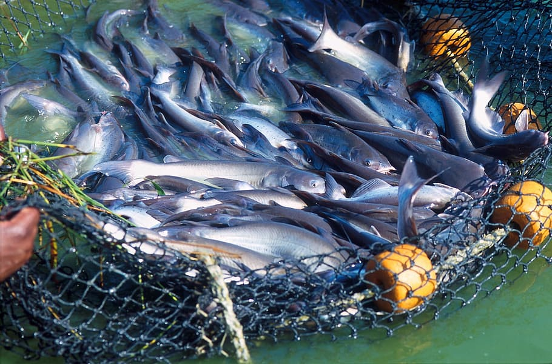

ANIMAL HUSBANDRY
AQUATIC FARMING

Aquaculture (less commonly spelled aquiculture), also known as aquafarming, is the farming of fish, crustaceans, mollusks, aquatic plants, algae, and other organisms. Aquaculture involves cultivating freshwater and saltwater populations under controlled conditions, and can be contrasted with commercial fishing, which is the harvesting of wild fish. Mariculture commonly known as marine farming refers to aquaculture practiced in marine environments and in underwater habitats, opposed to in freshwater.